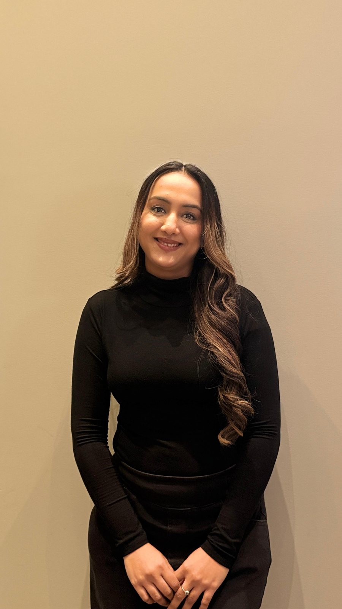

Defined by Dwija
About Dwija
Refined, timeless beauty — thoughtfully tailored for every bride and every meaningful moment.
Defined by Dwija is a premium bridal beauty experience rooted in calm artistry, thoughtful detail, and a personalized approach to modern wedding styling.

Vancouver-based makeup artist and hairstylist serving bridal, fashion, editorial, and special event clients.
- 10+
- Years of experience
- 2019
- Relocated to Canada
- BC
- Blanche Macdonald certified

The artist
Bridal artistry shaped by experience, education, and a calm eye for detail.
Dwija Patel is a Vancouver-based makeup artist and hairstylist with over a decade of experience in bridal beauty, fashion, and special events. Her journey began in India before relocating to Canada in 2019, where she later completed her diploma certification at Blanche Macdonald and continued building her work across bridal, editorial, and luxury event styling. Her expertise spans both Western and South Asian bridal artistry, with her work being featured in multiple editorial publications over the years.
Known for her calm presence, attention to detail, and personalized approach, Dwija believes beauty should feel effortless, refined, and true to the individual. She works closely with every client to create looks that enhance natural features while reflecting each person's unique style, personality, and vision. From soft glam bridal beauty to timeless wedding styling, her focus is always on creating an elevated, seamless, and memorable experience from start to finish.
My philosophy
The most confident and elevated version of yourself.
I believe makeup and hairstyling should never feel overwhelming or overly transformed — it should feel like the most confident and elevated version of yourself. Every bride, event, and face is unique, which is why my approach is always thoughtful, collaborative, and tailored to the individual.
My goal is not only to create a beautiful final look, but to ensure the entire experience feels calm, enjoyable, and unforgettable.
Bridal consultation
Ready to begin your bridal beauty experience?
Share your date, location, services, and vision so Dwija can respond with availability and next steps.
Book your bridal consultation